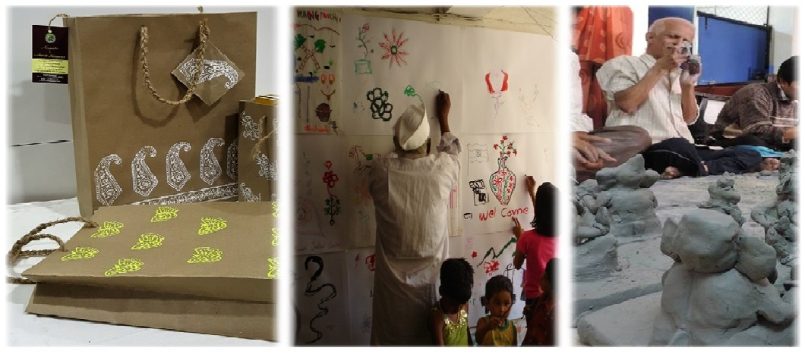

A sheltered environment for psychiatric patients on their way to recovery
FOR APPOINTMENTS
Call: +91 (2162) 228201 / 236985
Email: bmg@maitraclinic.com
Saarth Sanmaan is a psychiatric rehabilitation facility established in 2010. Serving a population of 3 million in the Satara district, it is among a handful of private practice rehabilitation centers providing holistic rehabilitation for psychiatric patients. Alongside medicinal and psychiatric treatment, rehabilitation is an important and necessary step in the patients’ road to recovery.
We provide four levels of rehabilitation for patients - cognitive, psychological, vocational and social rehabilitation - while simultaneously sensitizing care-givers and employers towards psychiatric rehabilitation. This helps restore patients’ self dependence and enables their full recovery, right up to the point that they can integrate as fully functioning members of the society. We assess each patient's mental state, based on which s/he may have to undergo one or more levels of rehabilitation.
Cognitive rehabilitation targets cognitive issues. A patient having difficulty of cognitive functioning may become irritable or stressed since their ability to intake and process new information reduces. In order to treat such patients, we provide them a variety of world-class brain exercises and therapies to gradually improve their mental functioning.
Psychological rehabilitation helps patients understand, cope any communicate their feelings with others. When individuals suffer from a mental illness, their emotional state is very fragile. They also feel vulnerable and anxious about voicing their thoughts and concerns due to reduced cognitive ability. They start feeling lonely and withdraw into themselves, rejecting help from family and friends. Patients undergo therapy sessions that enable them to admit their negative feelings and understand the root cause behind them. During these sessions, patients also learn how to effectively communicate one’s feelings with one’s family and friends, thus preventing strained relations and also enabling the patient to receive their family’s help.
Social Rehabilitation includes social integration, improvement in social activities and building up social support system with the help of social skills training. Due to emotional turmoil, cognitive impairment, communication problems and other distressing symptoms due to illness, an individual may start avoiding people. They become aloof and reduce interaction with their family and friends. Issues like personal hygiene further drives them away from people. Social rehabilitation addresses this type of mental state.
Vocational Rehabilitation engages patients in meaningful work which not only provides them a means of financial support, but also a chance to live a life with dignity. It includes vocational skills training, work attitude training, motivation enhancement, training for getting along with work environment, co-workers and supervisors.
In their journey to recovery, patients at Saarth Sanmaan create hand printed, eco-friendly, paper gift bags, cloth bags and other similar products. This instills self-dependence and self-confidence in patients and proves that mental illness need not be a hurdle in fulfilling one’s potential.
*FOR INFORMATION, PLEASE CONTACT:
Dr. Animish Chavan / Prachi Mastoli
***We welcome orders for handcrafted items created by individuals at Saarth Sanmaan. Each product is eco-friendly and 100% bio-degradable. It offers these persons a chance to earn a respectful living rather than depending on charitable contributions.***
Rukminikunj,
599 Guruwar Peth,
Satara -
415002
Mon - Fri : 10:00 AM to 7:00 PM
Sat – Sun : Closed
info@maitraclinic.com
+91 (2162) 228201 / 236985